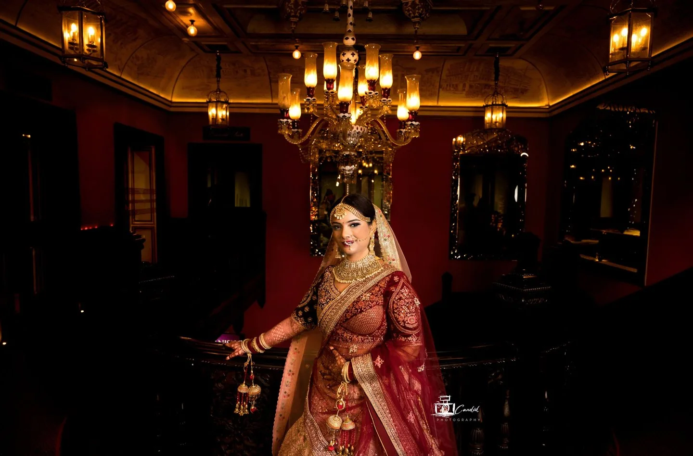
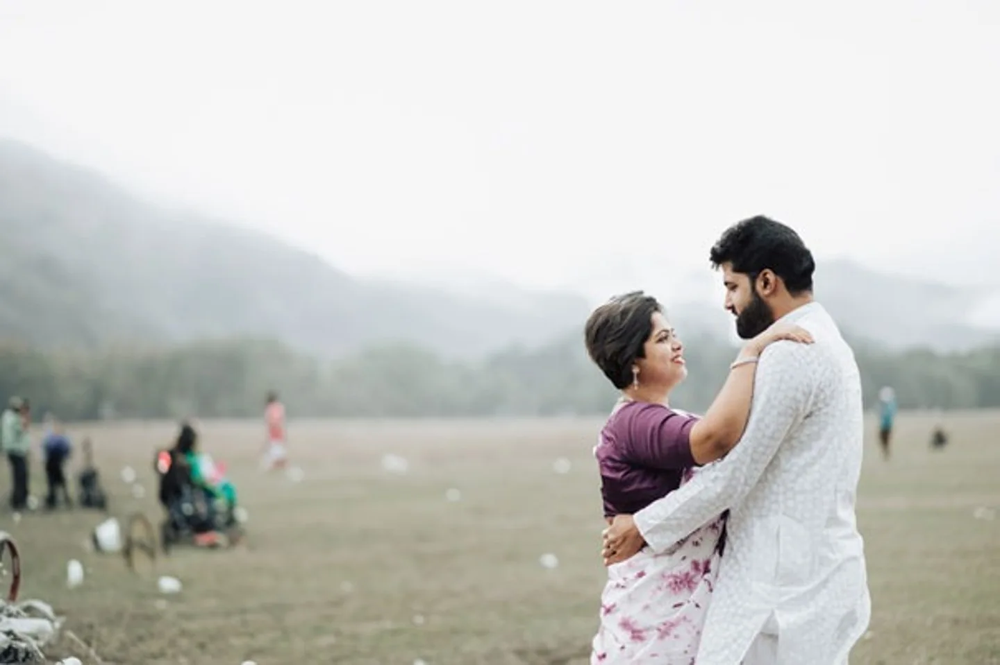

Kolkata wedding photography & films
The day passes.
The feeling stays.
The stolen glance. The familiar laugh. The people who make it yours. Wedding photographs and films to hold on to it all.
Open to everywhere.Honest moments.
Beautifully remembered.

A little light. A lifetime of feeling.
A photograph can take you back
Not just how it looked.
How it felt to be there.
A wedding is a thousand small stories happening at once. We’re drawn to the connection between people, the beauty of tradition, and the fleeting things you might otherwise miss.
Selected collections
Love, in its
many forms.



Stories in motion
Some feelings
need sound.
The voices. The laughter. The pauses between words. Discover a different way to return to your celebration.
Explore the filmsBefore the shutter
You bring yourselves.
We’ll bring the perspective.
Space to be you
Talk through what feels comfortable, what matters, and the kind of photographs you connect with.
Your people, your rituals
Plan for the family photographs and meaningful traditions, alongside the moments that happen naturally.
Something to return to
Explore photographs, films and albums, with coverage shaped around your celebrations.
Your celebration, our next chapter
Let’s make something
worth remembering.
Tell us about your weddingKolkata · Celebrating across India